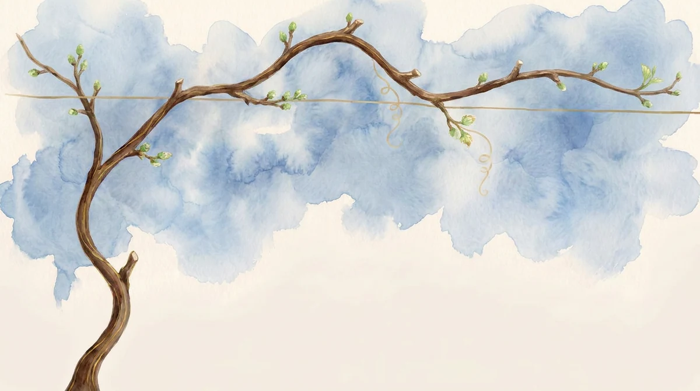

A videira mostra o momento atual. Os contadores, a colheita e os selos contam a jornada inteira.

Cada semana completa acrescenta um cacho. São 12 ao longo da jornada.
Cada selo marca uma conquista real do seu caminho.